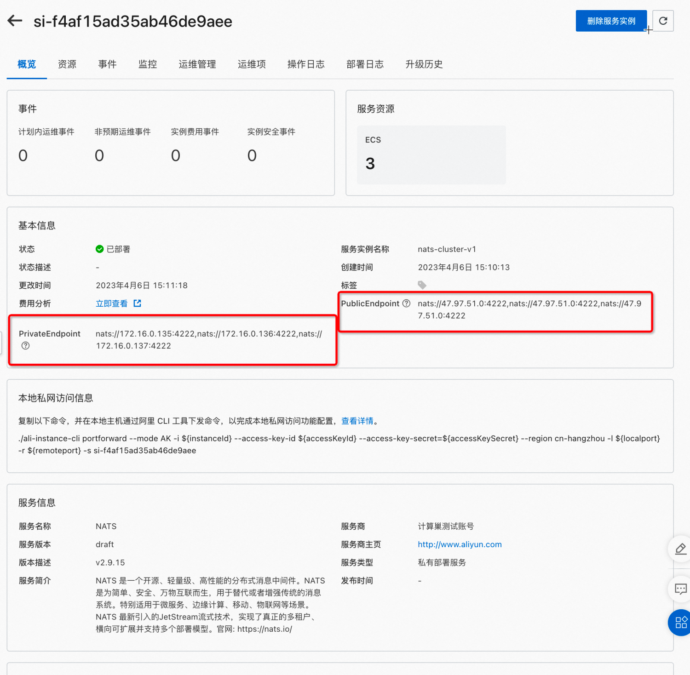

NATS社区版服务实例部署文档
概述
NATS是一个开源、轻量级、高性能的分布式消息中间件。
随着NATS2.0的出现，NATS生态得到了极大的发展，NATS 2.0提供了分布式安全、去中心化管理、多租户、更大的网络、全球可扩展以及安全的数据共享。但NATS流在适应NATS 2.0方面存在很多限制，而且流系统还没有发展到能够应对下一代物联网和边缘计算的挑战。
NATS 2.0的下一代NATS流系统被称为NATS JetStream，具有分布式安全、多租户和水平扩展能力。
计算巢上提供了NATS社区版服务，您无需自行配置云主机，即可在计算巢上快速部署NATS服务、实现运维监控，从而方便地基于NATS搭建您自己云原生、分布式、微服务架构的业务应用。
本文向您介绍如何开通计算巢上的NATS社区版服务，以及部署流程和使用说明。
计费说明
NATS社区版在计算巢上的费用主要涉及：
- 所选vCPU与内存规格
- 磁盘容量
- 公网带宽(如果开启公网服务)
计费方式包括：
- 按量付费（小时）
- 包年包月
预估费用在创建实例时可实时看到。
部署架构
NATS社区版有单机部署和集群部署两种架构。
集群版目前可以支持选择3-11奇数个节点部署。
所需权限
NATS服务需要对ECS、VPC等资源进行访问和创建操作，若您使用RAM用户创建服务实例，需要在创建服务实例前，对使用的RAM用户的账号添加相应资源的权限。 添加RAM权限的详细操作，请参见为RAM用户授权。所需权限如下表所示。
| 权限策略名称 | 备注 |
|---|---|
| AliyunECSFullAccess | 管理云服务器服务（ECS）的权限 |
| AliyunVPCFullAccess | 管理专有网络（VPC）的权限 |
| AliyunROSFullAccess | 管理资源编排服务（ROS）的权限 |
| AliyunComputeNestUserFullAccess | 管理计算巢服务（ComputeNest）的用户侧权限 |
| AliyunCloudMonitorFullAccess | 管理云监控（CloudMonitor）的权限 |
部署流程
本文档演示部署集群版的流程。
参数说明
您在创建服务实例的过程中，需要配置服务实例信息。下文介绍ZooKeeper社区版服务实例输入参数的详细信息。
| 参数组 | 参数项 | 示例 | 说明 |
|---|---|---|---|
| 选择模板 | 模板选择 | 集群版 | 模板架构类型 |
| 服务实例名称 | test | 实例的名称 | |
| 地域 | 华东1（杭州） | 选中服务实例的地域，建议就近选中，以获取更好的网络延时。 | |
| 可用区配置 | 部署区域 | 可用区I | 地域下的不同可用区域 |
| 付费类型配置 | 付费类型 | 按量付费 或 包年包月 | |
| 选择已有基础资源配置 | VPC ID | vpc-xxx | 选择专有网络的ID。 |
| 选择已有基础资源配置 | 交换机ID | vsw-xxx | 选择交换机ID。若找不到交换机, 可尝试切换地域和可用区 |
| ECS实例配置 | 实例类型 | ecs.g7.large | 实例规格，可以根据实际需求选择 |
| ECS实例配置 | 系统盘空间 | 40 | 系统盘空间，可以根据实际需求选择 |
| ECS实例配置 | 数据盘空间 | 40 | 数据盘空间，可以根据实际需求选择 |
| ECS实例配置 | 实例密码 | ** | 设置实例密码。长度8~30个字符，必须包含三项（大写字母、小写字母、数字、()`~!@#$%^&*-+={}[]:;'<>,.?/ 中的特殊符号） |
| ECS实例配置 | 开启公网IP | true | 是否开启公网IP |
| NATS配置 | 集群节点数 | 3 | 集群版节点数 |
| NATS配置 | admin密码 | * | 默认admin用户的密码22-30字符 |
部署步骤
单击部署链接， 进入服务实例部署界面，根据界面提示，可以选择默认的部署模板，快速部署，也可以使用自定义模板，对一些参数进行个性化配置。
详细的部署页面如下：

便捷的方式是选择默认的套餐，然后只需要选择可用区、选择VPC信息、配置实例密码、NATS密码点击即可进行集群创建。

等待大约1分钟，状态变为「已部署」时，集群即完成创建。
 此时点击服务实例名称连接，进入连接页面：
此时点击服务实例名称连接，进入连接页面：

可以看到公网和私网访问页面。
下面演示通过公网地址操作NATS.
集群配置探查
nats 配置文件
[root@iZbp139ju1kmizva7adgdbZ ~]# cat /etc/nats/nats.conf
server_name=iZbp139ju1kmizva7adgdbZ-172-16-0-155
listen: 0.0.0.0:4222
http: 8222
accounts {
$SYS {
users = [
{ user: "admin",
pass: "$2a$11$GUizXsS82Y.dll.uZXDic.qMDePF2IT6d3t5iWIs.rQ3lY1p6mDKC"
}
]
}
}
jetstream {
store_dir=/data/nats-storage
}
cluster {
name: C1
listen: 0.0.0.0:4248
routes = [
nats-route://172.16.0.155:4248
nats-route://172.16.0.157:4248
nats-route://172.16.0.156:4248
]
}
从配置可以看到默认启用了JetStream特性，持久化目录存储在数据盘/data下
[root@iZbp19f7ptaaw66l28h5bnZ ~]# df -h
Filesystem Size Used Avail Use% Mounted on
devtmpfs 3.8G 0 3.8G 0% /dev
tmpfs 3.8G 0 3.8G 0% /dev/shm
tmpfs 3.8G 512K 3.8G 1% /run
tmpfs 3.8G 0 3.8G 0% /sys/fs/cgroup
/dev/vda1 40G 2.5G 35G 7% /
/dev/vdb1 40G 49M 38G 1% /data
tmpfs 768M 0 768M 0% /run/user/0
[root@iZbp19f7ptaaw66l28h5bnZ ~]# tree /data/nats-storage/
/data/nats-storage/
└── jetstream
├── $G
│ └── streams
│ └── my_stream
│ ├── meta.inf
│ ├── meta.sum
│ ├── msgs
│ │ ├── 1.blk
│ │ ├── 1.fss
│ │ └── 1.idx
│ └── obs
│ ├── foo_comsumer
│ │ ├── meta.inf
│ │ ├── meta.sum
│ │ └── o.dat
│ ├── foo_consumer
│ │ ├── meta.inf
│ │ ├── meta.sum
│ │ └── o.dat
│ └── foo_consumer2
│ ├── meta.inf
│ ├── meta.sum
│ └── o.dat
nats 使用systemd启动配置如下：
$ cat /etc/systemd/system/natsd.service
[Unit]
Description=natsd.service
[Service]
Type=simple
ExecStart=/usr/bin/nats-server --config /etc/nats/nats.conf
Restart=always
RestartSec=10
[Install]
WantedBy=multi-user.target
NATS 集群实践
创建context
$ nats context save computenest-nats --server nats://47.98.102.138:4222,nats://47.98.102.138:4222,nats://47.98.102.138:4222 --description 'ComputeNest NATS Cluster' --select
NATS Configuration Context "computenest-nats"
Description: ComputeNest NATS Cluster
Server URLs: nats://47.98.102.138:4222,nats://47.98.102.138:4222,nats://47.98.102.138:4222
Path: /root/.config/nats/context/computenest-nats.json
Connection: OK
$ nats context ls
╭──────────────────────────────────────────────╮
│ Known Contexts │
├───────────────────┬──────────────────────────┤
│ Name │ Description │
├───────────────────┼──────────────────────────┤
│ computenest-nats* │ ComputeNest NATS Cluster │
│ local │ Local Host │
╰───────────────────┴──────────────────────────╯
接下来所有的步骤都默认会使用上面配置的计算巢 NATS 集群.
创建流
$ nats stream add my_stream
? Subjects foo
? Storage file
? Replication 3
? Retention Policy Limits
? Discard Policy Old
? Stream Messages Limit -1
? Per Subject Messages Limit -1
? Total Stream Size -1
? Message TTL -1
? Max Message Size -1
? Duplicate tracking time window 2m0s
? Allow message Roll-ups No
? Allow message deletion Yes
? Allow purging subjects or the entire stream Yes
Stream my_stream was created
Information for Stream my_stream created 2023-04-09 08:28:33
Subjects: foo
Replicas: 3
Storage: File
Options:
Retention: Limits
Acknowledgements: true
Discard Policy: Old
Duplicate Window: 2m0s
Allows Msg Delete: true
Allows Purge: true
Allows Rollups: false
Limits:
Maximum Messages: unlimited
Maximum Per Subject: unlimited
Maximum Bytes: unlimited
Maximum Age: unlimited
Maximum Message Size: unlimited
Maximum Consumers: unlimited
Cluster Information:
Name: C1
Leader: iZbp139ju1kmizva7adgdcZ-172-16-0-157
Replica: iZbp139ju1kmizva7adgdbZ-172-16-0-155, current, seen 0.00s ago
Replica: iZbp139ju1kmizva7adgddZ-172-16-0-156, current, seen 0.00s ago
State:
Messages: 0
Bytes: 0 B
FirstSeq: 0
LastSeq: 0
Active Consumers: 0
注意事项：
- Replication 配置为3，指明创建的流具备三个副本的高可用版本，NATS 会基于RAFT协议进行数据备份实现高可用
发布消息
本部分使用nats pub命令进行发布消息
$ nats pub foo --count=1000 --sleep 1s "publication #{{Count}} @ {{TimeStamp}}"
27 / 1000 [====>--------------------------------------------] 26
创建消费者
要消费消息，首先要创建消费者：
$ nats consumer add
? Consumer name foo_consumer
? Delivery target (empty for Pull Consumers)
? Start policy (all, new, last, subject, 1h, msg sequence) all
? Acknowledgement policy explicit
? Replay policy instant
? Filter Stream by subject (blank for all)
? Maximum Allowed Deliveries -1
? Maximum Acknowledgements Pending 0
? Deliver headers only without bodies No
? Add a Retry Backoff Policy No
? Select a Stream my_stream
Information for Consumer my_stream > foo_consumer created 2023-04-09T08:31:23+08:00
Configuration:
Durable Name: foo_consumer
Pull Mode: true
Deliver Policy: All
Ack Policy: Explicit
Ack Wait: 30s
Replay Policy: Instant
Max Ack Pending: 1,000
Max Waiting Pulls: 512
Cluster Information:
Name: C1
Leader: iZbp139ju1kmizva7adgddZ-172-16-0-156
Replica: iZbp139ju1kmizva7adgdbZ-172-16-0-155, current, not seen
Replica: iZbp139ju1kmizva7adgdcZ-172-16-0-157, current, seen 0.00s ago
State:
Last Delivered Message: Consumer sequence: 0 Stream sequence: 0
Acknowledgment floor: Consumer sequence: 0 Stream sequence: 0
Outstanding Acks: 0 out of maximum 1,000
Redelivered Messages: 0
Unprocessed Messages: 45
Waiting Pulls: 0 of maximum 512
消费消息
创建完消费者后就可以进行消费数据：
$ nats consumer next my_stream foo_consumer --count 1000
[09:05:18] subj: foo / tries: 1 / cons seq: 1 / str seq: 1 / pending: 27
publication #1 @ 2023-04-06T15:17:18+08:00
Acknowledged message
[09:05:18] subj: foo / tries: 1 / cons seq: 2 / str seq: 2 / pending: 26
publication #2 @ 2023-04-06T15:17:19+08:00
Acknowledged message
[09:05:18] subj: foo / tries: 1 / cons seq: 3 / str seq: 3 / pending: 25
...
多实例消费
多实例消费演示多个实例同时消费一个topic时，NATS 会进行一定的负载均衡保证每个启动的实例均分生产的消息，这在实际业务中可以做负载均衡，消费者水平扩展。
消费实例1:
$ nats consumer next my_stream foo_consumer --count 1000
...
[08:33:45] subj: foo / tries: 1 / cons seq: 186 / str seq: 186 / pending: 0
publication #186 @ 2023-04-09T08:33:45+08:00
Acknowledged message
[08:33:47] subj: foo / tries: 1 / cons seq: 188 / str seq: 188 / pending: 0
publication #188 @ 2023-04-09T08:33:47+08:00
Acknowledged message
[08:33:49] subj: foo / tries: 1 / cons seq: 190 / str seq: 190 / pending: 0
publication #190 @ 2023-04-09T08:33:49+08:00
Acknowledged message
[08:33:51] subj: foo / tries: 1 / cons seq: 192 / str seq: 192 / pending: 0
publication #192 @ 2023-04-09T08:33:51+08:00
Acknowledged message
...
消费实例2:
$ nats consumer next my_stream foo_consumer --count 1000
[08:33:46] subj: foo / tries: 1 / cons seq: 187 / str seq: 187 / pending: 0
publication #187 @ 2023-04-09T08:33:46+08:00
Acknowledged message
[08:33:48] subj: foo / tries: 1 / cons seq: 189 / str seq: 189 / pending: 0
publication #189 @ 2023-04-09T08:33:48+08:00
Acknowledged message
[08:33:50] subj: foo / tries: 1 / cons seq: 191 / str seq: 191 / pending: 0
publication #191 @ 2023-04-09T08:33:50+08:00
Acknowledged message
[08:33:52] subj: foo / tries: 1 / cons seq: 193 / str seq: 193 / pending: 0
publication #193 @ 2023-04-09T08:33:52+08:00
Acknowledged message
查看流状态
$ nats stream info my_stream
nats stream info my_stream
Information for Stream my_stream created 2023-04-09 08:28:33
Subjects: foo
Replicas: 3
Storage: File
Options:
Retention: Limits
Acknowledgements: true
Discard Policy: Old
Duplicate Window: 2m0s
Allows Msg Delete: true
Allows Purge: true
Allows Rollups: false
Limits:
Maximum Messages: unlimited
Maximum Per Subject: unlimited
Maximum Bytes: unlimited
Maximum Age: unlimited
Maximum Message Size: unlimited
Maximum Consumers: unlimited
Cluster Information:
Name: C1
Leader: iZbp139ju1kmizva7adgdcZ-172-16-0-157
Replica: iZbp139ju1kmizva7adgdbZ-172-16-0-155, current, seen 0.85s ago
Replica: iZbp139ju1kmizva7adgddZ-172-16-0-156, current, seen 0.85s ago
State:
Messages: 350
Bytes: 26 KiB
FirstSeq: 1 @ 2023-04-09T00:30:38 UTC
LastSeq: 350 @ 2023-04-09T00:36:30 UTC
Active Consumers: 1
Number of Subjects: 1
说明：
- 可以看到流的副本数为3
- 集群信息部分可以看到node2-c1 这个节点是Leader，node1、node3是Follower
下一步将node2节点宕机观看流的情况。
高可用验证
通过查看流的状态发现创建的流的leader节点是"iZbp139ju1kmizva7adgdcZ-172-16-0-157"，
现在将此节点关机:
 之后再查看流的状态
之后再查看流的状态
$ nats stream info my_stream
Information for Stream my_stream created 2023-04-09 08:28:33
Subjects: foo
Replicas: 3
Storage: File
Options:
Retention: Limits
Acknowledgements: true
Discard Policy: Old
Duplicate Window: 2m0s
Allows Msg Delete: true
Allows Purge: true
Allows Rollups: false
Limits:
Maximum Messages: unlimited
Maximum Per Subject: unlimited
Maximum Bytes: unlimited
Maximum Age: unlimited
Maximum Message Size: unlimited
Maximum Consumers: unlimited
Cluster Information:
Name: C1
Leader: iZbp139ju1kmizva7adgddZ-172-16-0-156
Replica: iZbp139ju1kmizva7adgdbZ-172-16-0-155, current, seen 0.38s ago
Replica: iZbp139ju1kmizva7adgdcZ-172-16-0-157, outdated, OFFLINE, seen 20.64s ago, 548 operations behind
State:
Messages: 545
Bytes: 41 KiB
FirstSeq: 1 @ 2023-04-09T00:30:38 UTC
LastSeq: 545 @ 2023-04-09T00:39:46 UTC
Active Consumers: 1
Number of Subjects: 1
可以看到集群状态部分 156号节点变成新的Leader，157状态为OFFLINE。
此时创建新的消费者重新消费数据：
nats consumer add
? Consumer name foo_consumer2
? Delivery target (empty for Pull Consumers)
? Start policy (all, new, last, subject, 1h, msg sequence) all
? Acknowledgement policy explicit
? Replay policy instant
? Filter Stream by subject (blank for all)
? Maximum Allowed Deliveries -1
? Maximum Acknowledgements Pending 0
? Deliver headers only without bodies No
? Add a Retry Backoff Policy No
? Select a Stream my_stream
Information for Consumer my_stream > foo_consumer2 created 2023-04-09T08:42:07+08:00
Configuration:
Durable Name: foo_consumer2
Pull Mode: true
Deliver Policy: All
Ack Policy: Explicit
Ack Wait: 30s
Replay Policy: Instant
Max Ack Pending: 1,000
Max Waiting Pulls: 512
Cluster Information:
Name: C1
Leader: iZbp139ju1kmizva7adgdbZ-172-16-0-155
Replica: iZbp139ju1kmizva7adgdcZ-172-16-0-157, outdated, not seen
Replica: iZbp139ju1kmizva7adgddZ-172-16-0-156, current, seen 0.00s ago
State:
Last Delivered Message: Consumer sequence: 0 Stream sequence: 0
Acknowledgment floor: Consumer sequence: 0 Stream sequence: 0
Outstanding Acks: 0 out of maximum 1,000
Redelivered Messages: 0
Unprocessed Messages: 685
Waiting Pulls: 0 of maximum 512
$ nats consumer next my_stream foo_consumer2 --count 3
[08:42:27] subj: foo / tries: 1 / cons seq: 1 / str seq: 1 / pending: 703
publication #1 @ 2023-04-09T08:30:38+08:00
Acknowledged message
[08:42:27] subj: foo / tries: 1 / cons seq: 2 / str seq: 2 / pending: 702
publication #2 @ 2023-04-09T08:30:39+08:00
Acknowledged message
[08:42:27] subj: foo / tries: 1 / cons seq: 3 / str seq: 3 / pending: 701
publication #3 @ 2023-04-09T08:30:40+08:00
Acknowledged message
此时故障节点恢复之后：重新查看流的状态：
$ nats stream info my_stream
Information for Stream my_stream created 2023-04-09 08:28:33
Subjects: foo
Replicas: 3
Storage: File
Options:
Retention: Limits
Acknowledgements: true
Discard Policy: Old
Duplicate Window: 2m0s
Allows Msg Delete: true
Allows Purge: true
Allows Rollups: false
Limits:
Maximum Messages: unlimited
Maximum Per Subject: unlimited
Maximum Bytes: unlimited
Maximum Age: unlimited
Maximum Message Size: unlimited
Maximum Consumers: unlimited
Cluster Information:
Name: C1
Leader: iZbp139ju1kmizva7adgddZ-172-16-0-156
Replica: iZbp139ju1kmizva7adgdbZ-172-16-0-155, current, seen 0.22s ago
Replica: iZbp139ju1kmizva7adgdcZ-172-16-0-157, current, seen 0.22s ago
State:
Messages: 780
Bytes: 58 KiB
FirstSeq: 1 @ 2023-04-09T00:30:38 UTC
LastSeq: 780 @ 2023-04-09T00:43:43 UTC
Active Consumers: 2
Number of Subjects: 1
可以看到流的集群信息三个节点全部变为可用状态，刚异常的node2节点恢复了,加入之前两个健康节点的集群后自动变成了follower。
下一步
NATS 目前逐步演变为一个生态，可以实践、演示的功能还非常多，包括单不限于以下方面：
- 安全认证：支持Token、user/pass、TLS、NKEY、JWT等安全配置
- 连接协议：除了基于默认的nats 连接协议外，还支持WebSocket、MQTT连接，并且可以通过Kafka Bridge JMS 将其他消息系统的流量转到NATS
- JetStream 更多的功能：JetStream 是NATS最新一代的高可用流式系统，支持非常多的高级特性：
- 流重放策略
- 流式存储
- 保留策略
- 消息配额
- 持久化
- 流Mirror
- 双端流控
- Exactly-Once语义支持
- 多租户管理：基于nsc工具进行多租户账号配置管理
- 边缘场景：为了支持边缘计算、IOT场景，NATS支持在边缘部署本地的NATS集群，跟中心集群交互。使得边缘设备可以通过连接边缘本地集群快速进行业务数据的生产，不会强依赖跟远端中心集群的网络稳定性，边缘场景参考。
参考文档
[1]: nats cluster creation: https://docs.nats.io/running-a-nats-service/nats_docker#creating-a-nats-cluster
[2]: jetString cluster: https://docs.nats.io/running-a-nats-service/configuration/clustering/jetstream_clustering
[3]: js walkthrough： https://docs.nats.io/nats-concepts/jetstream/js_walkthrough